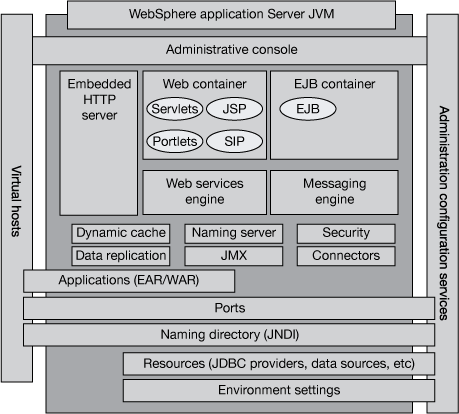
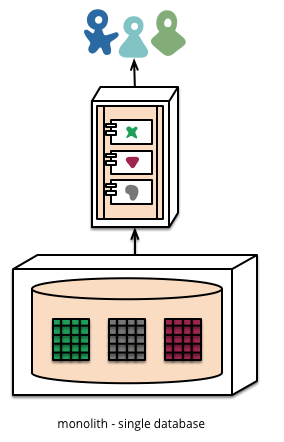

Before we dive into the ocean of microservices, let us revisit the application architecture we used to know for many years!
We used to see this...
Or something like this
Let's pack these resources into this
jar along with those wars
in that ear.
We call this architectural style as Monolithic Architecture.
So, what typical challenges* are we facing?
*keyword is typicalWhen time goes by, it is unavoidable that a deployment requires to bring down components more than it is really required. Well, this will in-turn affect the time-to-market as we need to notify, get consensus, and testing with all parties.
Also, advance deployment methods such as A-B test deployment, green-blue deployment, and canary deployment are very difficult to be achieved with Monolithic Architecture.
Of course, if design (both organizational design and technical design) and DevOps are done right consistently and continuously, monolithic can be very scalable, resilient, easy to deploy with good time-to-market.
Look at StackExchange.com (master site of the bespoke StackOverflow.com) as an example!
p.s. In other words, if things are not done right, you will suffer 1000 times more from microservices than monolithic.
Questions? Questions? Questions?
Build your big system
with micro services
So, a typical application built with microservices looks like...
and, a monolithic looks like...
*In my humble opinion, the keywords are designed and deployed.
Unlike with SOA, microservices often exist implicitly. Microservices are well-known to the consumers, and therefore do not require service description.
In contrast, microservices architecture was embraced by companies attempting to scale a single web property to web scale levels, enable continuous evolution, make engineering teams more efficient, and avoid technology lock-in.
Smaller code base > faster IDE and build;
Smaller code base > easier code dependency management;*
Autonomous > easier to build tests;
Autonomous > less dependency again! E.g. less constraint to do refactoring
*In exhange of service dependency management
Use suitable stack to solve a problem;
Easier to scale bottleneck;
More resiliency;
More suitable for cloud / container ecosystems*
*Will talk about them later...
Enjoy what architects are enjoying :)
Faster time-to-market and better user experience!
*It is always not straightforward, i.e. it is never straightforward.
Some patterns will help, e.g. Compensating Transaction pattern, Event Sourcing pattern, etc.
*Data management of microservices is a HUGE and extrememly difficult topic that will be talked in separate sharing!
Design patterns like Circuit Breaker, Bulk-head are there to help.
Tools like IBM Gremlin / NetFlix Chaos Monkey can help.
Libraries like Spring Actuator, Dropwizard Metrics help.
Cache aggressively (and manage them well).
Put performance testing into your testing pipeline.
Do we need a dedicated service registry* (like Consul)?
Is the hosting environment (PaaS / CaaS) having built-in feature?
Server or client-side load-balancing?
Self-register (and deregister) on instance create and destroy?
*See Service Discovery section of here
Also, we need different way to manage applicaiton log than traditional monolithic application, i.e. logs are usually treated as events and sent to a store for further analysis and monitoring.
Questions? Questions? Questions?
*And why is it usually modeled as hexagon? E.g. IBM, NetFlix, Martin Fowler, etc
- Dropwizard, early proponents and pioneer
- Spring Boot, mature player
- Wildfly Swarm, relatively new player
We will highlight a few areas today...
We used to package application as war / ear files and deploy them to application server like WAS.
In microservices, there is a new way to package your application!
It packages all dependencies and application code into a self-contained JAR with a flat class loader. This makes it easier to understand application startup, dependency ordering, and log statements; but more importantly, it helps reduce the number of moving pieces required to take an app safely to production.
All you need to run your application is
java -jar <name.jar>That's it!
Instead of running an application in an application container, we now run an application container inside your application!
Woo!All these frameworks come with built-in health data, performance metrics accessible via different ways.
These frameworks give very good support to annotations and externalizing configurations.
Want to know more?
Use the source, Luke!
Up next are Design Patterns for Microservices! (Hopefully in August 2016) and Designing Microservices - Your Data (Hopefully in September 2016)!
Use a spacebar or arrow keys to navigate